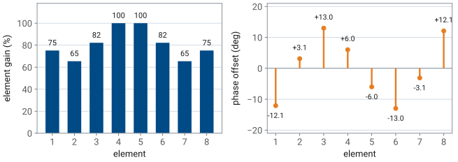
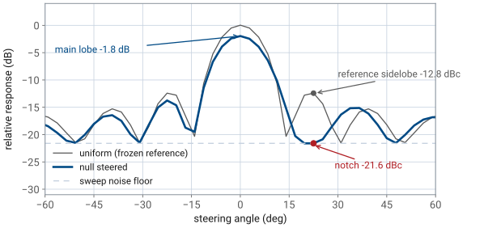
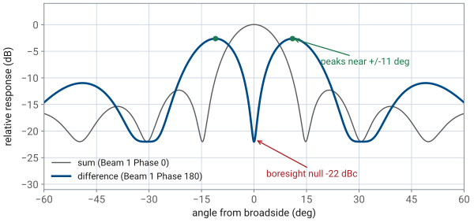
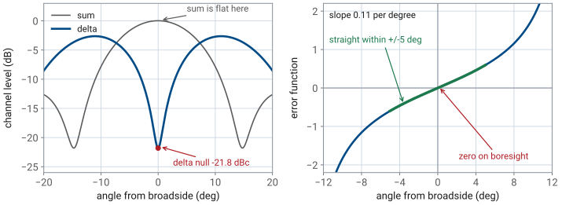

L28 - Null Steering Lab#
Null Steering Lab
Today you type those numbers into the array and find out what the hardware gives back.
Lesson 28 · Antennas, Phased Arrays, and Radar Systems · Dr. Neil Rogers
Learning Objectives
- I can implement computed null-steering weights on the PHASER and measure the resulting notch.
- I can place a boresight null by subtracting the two digital subarray channels.
- I can run the MVDR adaptive beamformer and interpret the weights it chooses against an interferer.
- I can compare manual null steering with adaptive beamforming and state where each wins.
Lesson 27 ended with a weight vector on paper: eight complex numbers that hold the beam on the target and put a pattern null on the jammer. Today you type those numbers into the array and find out what the hardware gives back. You will run three procedures, in increasing order of how much the array does for itself — a static notch you compute yourself, a boresight null you get for free by subtracting the two digital channels, and an adaptive beamformer that finds its own null from the received data. The three together are the whole null-steering toolbox, and the last one is the capstone problem in miniature. The lesson closes on that same difference beam put to a different use, measuring a target’s angle from a single look, which is where Module 4 begins.
Part 1: What Lesson 27 computed
The weight-subtraction result from Lesson 27 is one line. Start from the weights that steer the beam where you want it, \(w_d\), and the weights that would steer it at the interferer, \(w_n\), and remove the part of the first that points along the second:
The subtraction guarantees \(w^H w_n = 0\), which is exactly the statement that the array has no response in the direction of \(w_n\). Everything else about the pattern — where the main lobe sits, what the sidelobes do — is whatever falls out.
Converting weights to GUI settings
The course example holds the beam at broadside and nulls a jammer at \(\theta_1 = +22.5^\circ\), one first-sidelobe width off the beam. Converting the resulting complex weights to what the GUI accepts — element gain as a percentage of the largest, \(100\vert w_n\vert/\max\vert w\vert\), and phase offset as \(\angle w_n\) — gives the eight settings you will enter.
Element |
1 |
2 |
3 |
4 |
5 |
6 |
7 |
8 |
|---|---|---|---|---|---|---|---|---|
Gain (%) |
75 |
65 |
82 |
100 |
100 |
82 |
65 |
75 |
Phase (deg) |
\(-12.1\) |
\(+3.1\) |
\(+13.0\) |
\(+6.0\) |
\(-6.0\) |
\(-13.0\) |
\(-3.1\) |
\(+12.1\) |
The eight settings

Read the amplitudes first
Read the amplitudes first. They are symmetric about the array center but not monotonic — element 2 is quieter than element 1 — so this is no taper you would have reached for. The phases are antisymmetric, equal and opposite across the center. Neither column means much on its own. The eight numbers together are one vector, and only the vector nulls anything.
Three predictions
Three predictions come with the settings, and you will check all three:
the notch at \(+22.5^\circ\) reaches about \(-21.6\) dBc, against a uniform reference sidelobe of \(-12.8\) dBc at the same angle;
the main lobe loses about \(1.8\) dB of gain;
the notch bottoms out at roughly \(-21\) dB rather than going to zero, because the sweep’s noise floor sits about \(23\) dB below the uniform-taper peak and the nulled pattern’s main lobe is about \(2\) dB below that reference.
The monopulse difference beam
There is a second null available on this board that costs no computation at all. Each ADAR1000 sums its four elements into one RF channel, so the PHASER hands the Pluto two digital subarray channels, one for elements 1-4 and one for elements 5-8. Adding them is the ordinary sum beam. Subtracting them — setting Beam 1 Phase to \(180^\circ\) — puts a null on boresight with twin peaks near \(\pm 11^\circ\), about \(-22\) dBc deep. That is the monopulse difference beam, and Module 4 uses it for angle tracking.
Key point
A computed null and a structural null are different animals. The \(+22.5^\circ\) notch exists because you solved for eight weights, and it moves only when you solve again. The boresight null exists because two identical subarrays are being subtracted, and it sits at boresight no matter what the signal does.
Part 2: Equipment and setup
Item |
Note |
|---|---|
ADALM-PHASER (CN0566) + Raspberry Pi + ADALM-Pluto |
powered, on the lab network |
HB100 Doppler module |
the target source, on boresight, at least \(2\ \text{m}\) out |
Second HB100 |
the interferer for procedure C; one per kit |
Course Phaser GUI |
|
Bring the array up
Bring the array up the way every Module 3 lab starts. Set Signal Freq to the HB100’s measured frequency near \(10.525\ \text{GHz}\), run Calibrate, and confirm on the Rectangular tab that a uniform sweep gives a single peak within a degree or two of \(0^\circ\) with a first sidelobe near \(-13\) dBc. If the peak is off boresight or the sidelobes are lopsided, the calibration did not take and nothing measured afterwards is worth recording.
Two controls carry this lab
Two controls carry this lab. Start runs the beam sweep, stepping the commanded steer angle across the field of view and recording received power at each step; the \(x\) axis is the commanded angle, not a measured arrival angle. Freeze holds the current trace as a reference so a later sweep is drawn on top of it. Every measurement below is a comparison against a frozen trace.
Part 3: Procedure A — the static notch
With the array uniform (Element Gains at \(100\%\), Phase Control reset), press Start, then Freeze. This is your reference. Record the peak level and the level of the sidelobe nearest \(+22.5^\circ\); it should be about \(-12.8\) dBc.
Enter the eight percentages from Part 1 into Element Gains (Rx1 through Rx8). This set is symmetric about the array center, so Enforce Symmetric Taper makes no difference to it; leave the switch off so that a later edit to one slider is not mirrored onto its partner.
Enter the eight phase offsets from Part 1 into Phase Control. Keep the signs; a sign error moves the notch to \(-22.5^\circ\).
Press Start and read the new trace against the frozen one.
Procedure A — what comes back

Three numbers come off this plot
Three numbers come off this plot. The sidelobe at \(+22.5^\circ\) has dropped from \(-12.8\) dBc to about \(-21.6\) dBc, a change of roughly \(9\) dB at that angle. The main lobe has lost about \(1.8\) dB to the subtraction, which matches Lesson 27’s cost curve for a null this close to the beam. And the rest of the pattern has moved: the sidelobes on the far side are one to two decibels different from the reference, because the subtraction reshaped the whole aperture distribution, not just one angle.
Why the notch stops
Now ask why the notch stopped at \(-21.6\) dBc when the arithmetic in Lesson 27 predicted a true zero. The obvious suspect is the hardware resolution named in Lesson 26:
The phase shifter has a \(2.8125^\circ\) LSB, so a commanded \(+13.0^\circ\) is applied as \(+14.06^\circ\).
The gain control moves in steps of about \(1\%\), which perturbs the amplitudes the same way.
A rounded weight vector is still a weight vector
But a rounded weight vector is still a weight vector — it just nulls a slightly different direction, a fraction of a degree off where you asked. Push those quantized weights through the array factor and the residual at the designed angle is still about \(-48\) dB, far below anything this sweep can display. What you are reading instead is the measurement floor: the sweep’s noise floor sits about \(23\) dB below the uniform-taper peak, and the null weights cost about \(2\) dB of main lobe, so the deepest notch the plot can report is roughly \(21\) dB below the null-steered peak.
That is the general rule for a real array
That is the general rule for a real array: the notch you measure is limited by the dynamic range of the measurement, not by the null-steering algorithm and not by the phase shifter’s resolution. The \(20\text{-}22\) dB you record is the sweep’s floor, not what \(2.8^\circ\) phase resolution buys you. Before moving on, press Reset in Phase Control and return Element Gains to Uniform.
Part 4: Procedure B — the digital difference null
Open Digital Beam Forming and set Mode to Manual.
Leave Beam 0 Gain and Phase alone. Set Beam 1 Phase to \(180^\circ\).
Press Start.
Procedure B — what comes back

The peak that was at boresight
The peak that was at boresight is now a null about \(-22\) dBc deep, with two lobes of nearly equal height near \(\pm 11^\circ\). Nothing in the analog beamformers changed — all eight elements still carry the same phases they had a moment ago. The only change is a sign on one of the two digital channels, applied after the signal was digitized, and it is enough to cancel the two subarray outputs against each other on boresight.
Record the null depth
Record the null depth and the two peak angles. This is the monopulse difference beam: the sum beam tells you a target is there, the difference beam tells you which side of boresight it is on, and Module 4 turns the ratio of the two into an angle estimate accurate to a small fraction of a beamwidth. Set Beam 1 Phase back to \(0^\circ\) before continuing.
Part 5: Procedure C — adaptive nulling with MVDR
Procedures A and B both required you to know something in advance: the jammer’s angle in A, the array’s symmetry in B. The MVDR beamformer requires neither. It estimates the covariance of what the two channels are receiving, \(\hat R = \frac{1}{K} X X^H\) over \(K\) snapshots, and solves
for the weights that minimize total output power subject to holding unit gain in the look direction \(s\). Whatever is loud and is not in the look direction gets a null, and the beamformer never has to be told where it is.
Procedure C — adaptive against an interferer
Set Digital Beam Forming Mode to MVDR. Set Snapshots to \(128\) and Diagonal Load to \(0.001\). The look direction is the current Steer Angle, so leave it at \(0^\circ\).
Press Start with only the boresight HB100 running. The pattern keeps its main lobe on boresight and looks much like the manual sum beam. With nothing to reject, MVDR has nothing to do.
Have your partner hold the kit’s second HB100 off to one side, at roughly \(+30^\circ\), and bring it close enough to run about \(10\) dB stronger than the boresight source. Sweep again with Mode set to Manual, then with Mode set to MVDR, and compare the two traces.
The manual beamformer is captured
The manual beamformer is captured by the interferer: with \(10\) dB in its favor, the second source dominates the received power and the trace peaks toward it. MVDR holds the look direction and pushes its response toward the interferer down by \(17\) to \(19\) dB. That difference between the two traces, read at the interferer’s angle, is the measurement.
Both HB100s are nominally on the same frequency
Note
Both HB100s are nominally on the same frequency, so the FFT tab cannot show you two separate tones. The sources are not resolvable in frequency, and a free-running DRO drifts. The evidence for what MVDR did is the shape of the sweep trace and the fact that the look-direction peak survives, not a spectrum plot.
No hardware?
Note
No hardware? Simulation mode (python phaser_headless.py --sim) runs
procedures A and B exactly as written — the weights, the notch, and the
difference null are all in the physics model. It carries a single source fixed at
boresight, so procedure C and the tracking run in Part 7 need the bench.
The two-channel digital layer on its own
The widget below is the two-channel digital layer on its own, with the analog subarrays parked at boresight rather than sweeping. Move the interferer to about \(+20^\circ\) and watch MVDR put a null on it while the boresight response stays within about a decibel of where the manual weights left it. Then move the interferer out toward \(\pm 30^\circ\) and watch the suppression fall away.
Two limits are doing that
Two limits are doing that, and both belong to the architecture rather than to the algorithm. An interferer near \(\pm 30^\circ\) sits in the null of the four-element analog subarray, so almost none of its power reaches either channel and there is nothing left for the digital layer to remove. Beyond that, the two channels sit four elements apart, and their phase difference wraps through a full cycle across the width of the subarray beam, so a source near \(+30^\circ\) presents very nearly the same channel phase difference as one on boresight. The digital layer can only work on what the analog layer passes it, and only on directions the two channels can tell apart.
What MVDR chooses
On the bench the analog beam is sweeping rather than parked, so the number you record there is the gap between the manual and MVDR sweep traces at the interferer’s angle.
Part 6: Manual against adaptive
Question |
Manual null steering |
MVDR |
|---|---|---|
What must you know first? |
the interferer’s angle |
nothing |
Interferer moves |
recompute and re-enter eight weights |
tracks it, sweep by sweep |
Digital channels needed |
none — all eight analog elements |
both, and the data behind them |
Part 6: Manual against adaptive, continued
Question |
Manual null steering |
MVDR |
|---|---|---|
Null depth |
noise-floor-limited here, about \(20\text{-}22\) dB |
covariance-limited, \(17\text{-}19\) dB here |
Where it wins |
a known, fixed direction; full aperture control |
unknown or moving interference |
That is the trade
That is the trade. Manual null steering has eight degrees of freedom and can place several nulls at once, but every one of them is your arithmetic, computed for a geometry you assumed. MVDR has two degrees of freedom on this board — one constraint and one null — and it finds that null itself, from data, several times a second. On a larger array with per-element digitization, adaptive beamforming has both advantages at once; on the PHASER you can see precisely what the hybrid architecture costs, because the analog sums destroyed the per-element information before the algorithm ever saw it.
Module 5’s capstone is this lab with the target moving: track a maneuvering target with the sum and difference beams while an adaptive null holds a jammer down, which is procedures B and C running at the same time.
Part 7: Monopulse — measuring angle with two beams
Every measurement so far has come from a sweep. The array steps its commanded angle across the field of view, records power at each step, and you read the pattern off the trace. A sweep takes time, and a tracking radar does not have it: by the time the beam has stepped across and come back, a maneuvering target has moved. Monopulse is the answer, and you have already built half of it.
The difference beam from Part 4
The difference beam from Part 4 is the delta channel of a monopulse pair. Form both beams at once — add the two subarray channels for \(\Sigma\), subtract them for \(\Delta\) — and the pair carries angle information that neither beam carries alone. The sum beam is flat at its peak, so its level barely changes as the target drifts a degree off axis. The delta beam is zero on boresight and climbs steeply out of that null, so its level changes a great deal over the same degree. Divide one by the other and the small change becomes a large, readable number.
Sum and delta together

The error function
The two subarrays sit four elements apart, so \(\Delta\) arrives in quadrature with \(\Sigma\) and the useful quantity is the signed ratio
which is zero on boresight, positive on one side and negative on the other, and straight within about \(\pm 5^\circ\) — well inside the array’s \(13.1^\circ\) beamwidth. Its slope near boresight is about \(0.11\) per degree, so a target a single degree off axis produces an error reading of about \(0.11\), and a tracker that drives that reading back to zero holds the beam on the target far more finely than the beamwidth alone would allow. All of it comes from one look, with no sweep at all.
The GUI plots a normalized form
The GUI plots a normalized form of the same comparison, taking its sign from the phase difference between the two channels and its magnitude from the two dB channel readings as
so the trace stays bounded and on screen no matter how strong the target is.
Procedure D — watch it track
Run it on the bench.
Load Lab preset 8 (Tracking). This restores a uniform taper and sets the digital layer up to form both beams at once.
In Plot Options, turn on Show Monopulse Delta Beam and Show Monopulse Error Function.
Procedure D — watch it track, continued
On the Rectangular tab, press Start. The sum trace peaks on boresight and the delta trace nulls there, about \(-21.8\) dBc deep with its twin peaks near \(\pm 11^\circ\) — the same null you measured in Part 4. The error trace crosses zero at the same angle and changes sign across it.
Set Mode to Tracking and move the HB100 slowly across the front of the array. The tracker reads the error function, drives it back toward zero, and follows the source without sweeping.
Key point
A sweep finds targets; a monopulse pair measures them. Two beams formed at the same time turn a single look into a signed angle error, which is the measurement a tracking radar runs on.
That is the end of Module 3
That is the end of Module 3, and the door into Module 4. A radar has to know where its target is right now, not where it was at the end of the last sweep, and the sum and delta beams you just formed are how it finds out.
Part 8: Deliverables
Record and submit the following.
The static notch. A table with the frozen reference level and the null-steered level at \(+22.5^\circ\), the depth change between them, and the main-lobe peak level before and after. Compare each against the predicted \(-12.8\) dBc, \(-21.6\) dBc, and \(1.8\) dB.
The difference null. Null depth in dBc and the two peak angles, against the predicted \(-22\) dBc and \(\pm 11^\circ\).
Part 8: Deliverables, continued
MVDR against manual. From your own procedure C sweeps, the response at the interferer angle under both modes and the difference between them, plus the look-direction level under both.
Two written answers. (a) Why the measured notch depth is limited by the sweep’s noise floor rather than by quantization, with the numbers that set the floor and with the depth the quantized weights alone would allow. (b) One situation where a computed static null is the better choice than MVDR, and one where it is not, with a reason for each.
Lab sheet
The lab sheet is the turn-in document for all of it: Lab sheet (PDF).
Summary — the static notch
Idea |
What it is |
Number to remember |
|---|---|---|
Weight subtraction |
\(w = w_d - r_n w_n\), then convert to gain % and phase |
main-lobe cost \(1.8\) dB for a null at \(+22.5^\circ\) |
Measured notch |
what the sweep can actually show at that angle |
\(-21.6\) dBc, against a \(-12.8\) dBc reference sidelobe |
Depth limit |
the sweep’s noise floor, not the phase LSB or the algorithm |
floor \(23\) dB below the uniform peak gives a \(20\text{-}22\) dB notch |
Summary — adaptive and hybrid nulls
Idea |
What it is |
Number to remember |
|---|---|---|
Difference beam |
Beam 1 Phase \(= 180^\circ\) subtracts the two channels |
null on boresight, \(-22\) dBc, peaks at \(\pm 11^\circ\) |
MVDR |
\(w = R^{-1}s / (s^H R^{-1} s)\) from \(K\) snapshots |
\(17\text{-}19\) dB suppression, look direction held |
Degrees of freedom |
one constraint plus one null per digital channel pair |
2 channels null 1 interferer |
Hybrid cost |
analog sums discard per-element data |
8 elements, 2 adaptive degrees of freedom |
Summary — monopulse
Idea |
What it is |
Number to remember |
|---|---|---|
Monopulse error |
signed ratio of delta to sum, from one look |
zero on boresight, slope \(0.11\) per degree |
Practice
Where this is going
Module 4 begins radar. Lesson 29 derives the radar range equation and asks the question this module never had to: how much power comes back from a target that does not transmit anything of its own. Everything Module 3 built — beamwidth, sidelobes, scan loss, steering — becomes the antenna terms in that equation, and the array you have been sweeping becomes the front end of a radar.
You have already been through the door. The monopulse pair in Part 7 measures a target’s angle from a single look, which is what a radar needs in order to track something that moves, and Lesson 29 puts a power budget behind that measurement: how much energy has to leave the antenna for the echo to be detectable at all. The error function you watched cross zero is the angle channel of the tracking loop; the range equation supplies the signal that feeds it.
Read the radar range equation section of the text before Lesson 29, and bring your Part 7 numbers. The slope of the error curve near boresight is the quantity that sets how finely a tracking radar can measure angle, and Module 4 returns to it as soon as the power budget is in place.